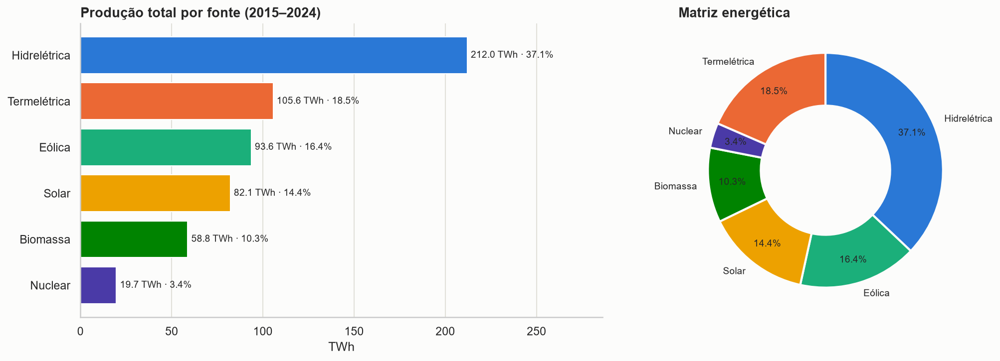
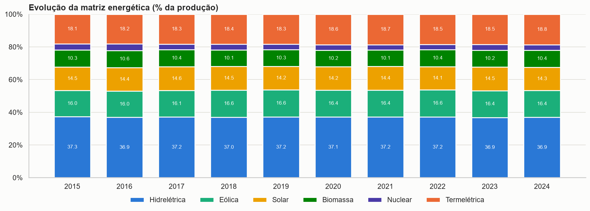
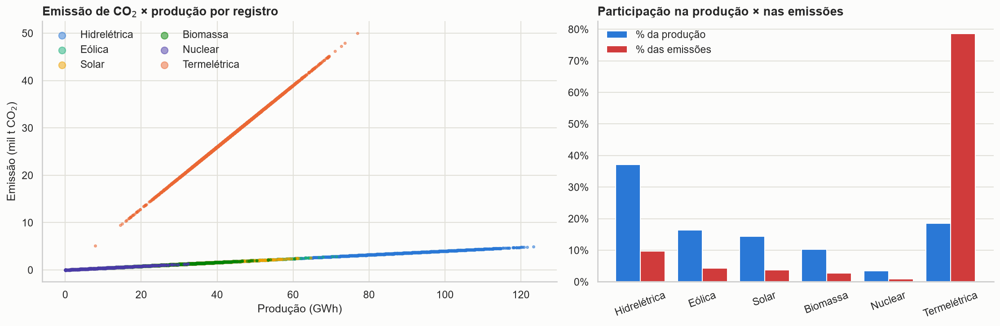
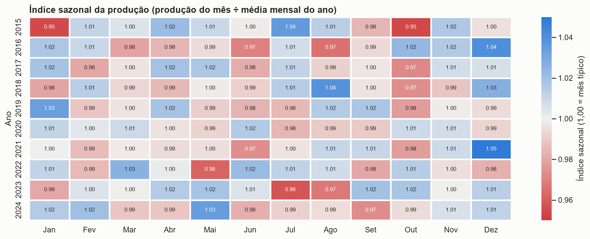

Sobre o projeto
A produção de energia é um dos principais indicadores de desenvolvimento econômico e de infraestrutura de um país. Este projeto analisa a produção e o consumo de energia no Brasil entre 2015 e 2024, a partir de uma base simulada com 14.400 registros mensais de 20 estados e 6 fontes: hidrelétrica, eólica, solar, biomassa, nuclear e termelétrica.
O trabalho cobre o fluxo completo de um projeto analítico: tratamento dos dados, engenharia de atributos, integração com a API do IBGE, persistência em banco relacional, análise exploratória, KPIs, visualizações, dashboard interativo e publicação.
Perguntas orientadoras
- Quais fontes energéticas predominam no Brasil?
- Quais regiões produzem mais energia?
- Houve crescimento da energia renovável?
- Existe sazonalidade na geração?
- Quais estados possuem maior produção?
- Há redução da dependência hidrelétrica?
- Como a matriz energética evoluiu ao longo do tempo?
Indicadores-chave
Principais resultados
Hidrelétrica lidera uma matriz majoritariamente renovável
A hidrelétrica gera 37,1% da energia, seguida por termelétrica (18,5%), eólica (16,4%), solar (14,4%), biomassa (10,3%) e nuclear (3,4%). As renováveis somam 78,1%.

Produção cresce, mas a matriz não muda
A produção passou de 46,7 para 67,7 TWh por ano (+45%). A energia renovável cresceu no mesmo ritmo, então sua participação ficou em 78% do início ao fim, e a dependência hidrelétrica caiu só 0,38 p.p.

A termelétrica concentra as emissões
A termelétrica emite 650 kg de CO₂ por MWh, 16 vezes as demais fontes. Com 18,5% da produção, responde por 78,6% do CO₂. As emissões subiram 48,8% em dez anos.

Sem sazonalidade e sem diferença entre estados
Os meses variam só 2% e o padrão não se repete entre os anos. Os estados produzem volumes quase iguais (28,3 a 28,8 TWh); o Nordeste lidera entre as regiões apenas por ter mais estados na base.

Dashboard interativo
O dashboard em Streamlit tem 8 páginas, gráficos interativos em Plotly e filtros globais por ano, mês, região, estado, fonte de energia e nível de demanda. KPIs, gráficos e textos interpretativos se atualizam com o recorte escolhido.
Visão geral
Descrição do problema, 6 KPIs, destaques e resumo da conclusão.
Evolução e sazonalidade
Linha temporal, área por fonte, crescimento anual e índice sazonal.
Fontes e matriz
Barras por fonte, pizza da matriz, evolução da participação e crescimento por fonte.
Regiões e estados
Mapa interativo com malha do IBGE, ranking estadual e comparação regional.
Produção × consumo
Dispersão consumo × produção, saldo por estado e nível de demanda.
Impacto ambiental
Dispersão emissão × produção, fator de emissão e matriz de correlação.
Explorar dados e SQL
Tabela dinâmica, consultas SQL no SQLite e download da base filtrada.
Conclusão executiva
Respostas às perguntas orientadoras, recomendações e limitações.
Funcionalidades implementadas
| Funcionalidade | Como foi feita |
|---|---|
| Gráficos avançados com Plotly | Área empilhada, barras 100%, rosca, dispersão com WebGL e tooltips unificados. |
| Mapas interativos | Mapa coroplético com Plotly e GeoJSON do IBGE (produção, saldo ou CO₂). |
| Consumo de API | Requests na API de dados do IBGE: estados e malha geográfica, com cópia local de contingência. |
| Persistência em banco | SQLite gerado com SQLAlchemy a partir da base tratada. |
| Modelagem relacional | ORM com 4 tabelas: regiões → estados → medições ← fontes de energia. |
| Dashboard multipágina | st.navigation com 8 páginas e filtros globais compartilhados. |
| Séries temporais e correlação | Crescimento composto, tendência linear (NumPy), média móvel, índice sazonal e Pearson/Spearman. |
| Interatividade | 6 filtros, upload de CSV, tabela dinâmica configurável, editor SQL somente leitura e downloads. |
Tratamento dos dados
- Verificação de nulos, duplicados por estado × fonte × mês, datas e valores negativos (nenhum problema encontrado).
- 452 valores no piso artificial de 100 MWh (nuclear e biomassa) sinalizados: somam menos de 0,01% da produção.
- Nuclear reclassificada como não renovável: o CSV atribuía 95% renovável a ela.
- Regra do nível de demanda confirmada: faixas da razão consumo ÷ produção (0,85 · 1,00 · 1,12).
- Novos atributos: saldo, índice de demanda, fator de emissão, classe da fonte, período hidrológico, nome e código IBGE.
Tecnologias utilizadas
- Python
- Pandas
- NumPy
- Plotly
- Matplotlib
- Seaborn
- Streamlit
- SQLAlchemy
- SQLite
- Requests
- API IBGE
- GitHub Pages
Arquivos do projeto
projeto-producao-energia/ ├── app.py # entrada do dashboard (dados, filtros, navegação) ├── paginas/ # 8 páginas do dashboard ├── src/ # limpeza, API IBGE, banco, KPIs e gráficos ├── requirements.txt ├── README.md ├── index.html # esta página ├── css/style.css # estilos da página ├── dados/ # CSV original, CSV tratado e cache do IBGE ├── database/ # producao_energia.sqlite ├── notebooks/ # analise_producao_energia.ipynb └── imagens/ # gráficos exportados pelo notebook
Conclusão
A produção de energia cresce de forma contínua (4,22% ao ano) e cobre o consumo com folga. A matriz é 78% renovável e liderada pela hidrelétrica, mas não está se transformando: as participações das fontes ficaram praticamente iguais em dez anos. O ponto de atenção é o impacto ambiental: a termelétrica cresceu no mesmo ritmo das renováveis, e as emissões subiram quase 49%. Descarbonizar exige que eólica e solar substituam a geração térmica, não apenas se somem a ela.
Base de dados simulada, usada para fins educacionais. Correlação não implica causalidade.